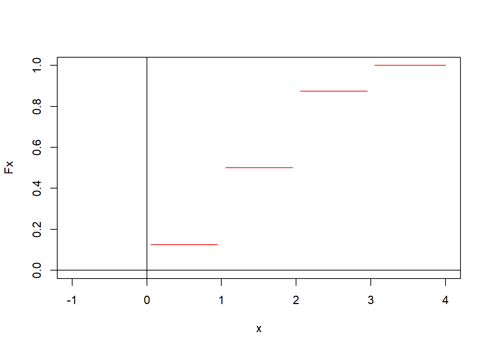

2 Probabilidad
Una de las herramientas fundamentales de la estadística es la probabilidad, la cual tuvo sus inicios formales con los juegos de azar en el siglo XVII. Los juegos de azar, como su nombre indica, involucran acciones como girar una rueda de ruleta, lanzar dados, lanzar una moneda, sacar una carta, entre otros, en los que el resultado de un evento es incierto. No obstante, se reconoce que aunque el resultado de cada evento en particular pueda ser incierto, existe un patrón predecible a largo plazo. Por ejemplo, se sabe que en múltiples lanzamientos de una moneda ideal (equilibrada y simétrica), aproximadamente la mitad de los resultados serán caras. Es esta regularidad predecible a largo plazo la que permite a las casas de juego mantener sus negocios.
Un tipo similar de incertidumbre y regularidad a largo plazo se observa con frecuencia en la ciencia experimental. Por ejemplo, en la ciencia de la genética no se puede determinar con certeza si una descendencia será masculina o femenina, pero a largo plazo se sabe aproximadamente qué porcentaje de descendencia será de cada sexo. De manera análoga, una compañía de seguros de vida no puede predecir qué personas en los Estados Unidos morirán a los 50 años, pero puede hacer predicciones precisas sobre cuántas personas morirán a esa edad en promedio.
Para brindar una idea de lo que es la probabilidad, (Mood, Graybill, y Boes 1986) proporciona las siguientes definiciones:
Definición 2.1 (Probabilidad clásica) Si un experimento aleatorio puede resultar en \(n\) resultados mutuamente excluyentes e igualmente probables y si \(s\) de estos resultados tienen un atributo \(A\), entonces la probabilidad de \(A\) es la fracción \(s/n\).
Definición 2.2 (Probabilidad frecuentista) Suponiendo que después de \(n\) repeticiones, para valores muy grandes de \(n\), un evento \(A\) puede ocurrir \(s\) veces. Entonces \(p=s/n\).
Estas definiciones, a pesar de su intuición, presentan limitaciones significativas. Por ejemplo, la primera definición es circular, ya que la frase “igualmente probables” es justamente lo que se intenta definir. Además, la segunda definición no especifica los valores de \(n\), lo cual puede generar ambigüedad. Estas definiciones son consideradas antiguas, pero aún pueden brindar una comprensión general del concepto de probabilidad.
2.1 Espacio muestral y eventos
A continuación, se presentarán algunas definiciones que resultarán de gran utilidad para adquirir un mayor conocimiento sobre el concepto de probabilidad. Se usará como referencia (Lipschutz 1996).
Definición 2.3 (Espacio muestral) El espacio muestral, denotado por \(\Omega\), es la colección o totalidad de todos los posibles resultados de un experimento conceptual.
Un resultado particular, es decir, un elemento del espacio muestral \(\Omega\), se denomina un punto muestral o una muestra.
Definición 2.4 (Evento) Un evento \(A\) es un subconjunto del espacio muestral \(\Omega\), es decir, es un conjunto de resultados.
Definición 2.5 (Espacio de eventos) La clase de todos los eventos asociados a un experimento dado se define como el espacio de eventos y se denotará por \(\mathfrak{F}\).
Definición 2.6 (Evento particular) El evento \(\{\omega\}\), que está constituido por un solo punto \(\omega \in \Omega\), se denomina evento muestral o punto muestral.
Las definiciones anteriores no definen con precisión lo que es un evento, ya que aunque un evento siempre será un subconjunto del espacio muestral, en espacios muestrales suficientemente grandes, no todos los subconjuntos serán eventos. Por lo tanto, la clase de todos los subconjuntos del espacio muestral no necesariamente corresponderá al espacio de eventos. Sin embargo, se observará que la clase de todos los eventos siempre se puede seleccionar lo suficientemente grande como para incluir todos aquellos subconjuntos (eventos) cuya probabilidad se desee analizar. Si el espacio muestral consta solo de un número finito de puntos, entonces el espacio de eventos correspondiente será la clase de todos los subconjuntos del espacio muestral.
Los conceptos presentados se ilustran con unos ejemplos muy simples;
La definición de espacio muestral es precisa y satisfactoria, mientras que las definiciones de evento y espacio de eventos no son completamente satisfactorias. Se mencionó que si el espacio muestral era “suficientemente grande”, no todos los subconjuntos del espacio muestral serían eventos; sin embargo, no se especificó exactamente qué subconjuntos serían eventos y cuáles no lo serían. En lugar de desarrollar las matemáticas necesarias para definir con precisión qué subconjuntos de \(\Omega\) constituyen nuestro espacio de eventos \(\mathfrak{F}\), se pueden enunciar algunas propiedades de \(\mathfrak{F}\) que parecen razonables requerir.
\(\Omega \in \mathfrak{F}\).
Si \(A\in\mathfrak{F}\), entonces \(A^c\in \mathfrak{F}\).
Si \(A_1\) y \(A_2\in \mathfrak{F}\), entonces \(A_1\cup A_2\in \mathfrak{F}\).
Se mencionó anteriormente que el interés principal radica en los eventos debido a la probabilidad de que ocurran. Por lo tanto, es deseable que \(\mathfrak{F}\) incluya \(\Omega\), el evento seguro. Además, si \(A\) es un evento, lo que significa que se puede hablar sobre la probabilidad de que ocurra \(A\), entonces \(A^c\) también debería ser un evento para poder hablar sobre la probabilidad de que \(A\) no ocurra. De manera similar, si \(A_1\) y \(A_2\) son eventos, entonces \(A_1\cup A_2\) también debería ser un evento.
Cualquier colección de eventos con propiedades (i.) y (iii.) se denomina álgebra booleana, o simplemente álgebra, de eventos. Cabe señalar que la colección de todos los subconjuntos de \(\Omega\) satisface necesariamente las propiedades mencionadas anteriormente. Varios resultados se derivan de las propiedades asumidas anteriormente de \(\mathfrak{F}\).
2.2 Definición de probabilidad
En esta sección se presenta la definición axiomática de probabilidad. Aunque esta definición formal de probabilidad, por sí sola, no permite asignar probabilidades reales a eventos que consisten en ciertos resultados de experimentos aleatorios, es otra de una serie de definiciones que conducen a ese objetivo. Dado que la probabilidad, al igual que los conceptos que se presentarán, se define como una función particular, se inicia esta subsección con una revisión del concepto de función.
Definición 2.7 (Función) Una función, llamada \(f(\cdot)\), con dominio \(A\) y contradominio \(B\), es una colección de pares ordenados, llamados \((a,b)\), que cumplen las siguientes condiciones:
\(a\in A\) y \(b\in B\)
Cada \(a\in A\) aparece como el primer elemento de algún par ordenado en la colección (cada \(b\in B\) no necesariamente es el segundo elemento de algún par ordenado)
Ningún par ordenado en la colección tiene el mismo primer elemento que otro par ordenado distinto.
Si \((a,b)\in f(\cdot)\), se escribe \(b=f(a)\) (se lee “\(b\) es igual a \(f\) de \(a\)”) y se denomina \(f(a)\) como el valor de \(f(\cdot)\) en \(a\). Para cualquier \(a\in A\), \(f(a)\) es un elemento de \(B\); mientras que \(f(\cdot)\) es un conjunto de pares ordenados. El conjunto de todos los valores de \(f(\cdot)\) se denomina rango de \(f(\cdot)\); es decir, el rango de \(f(\cdot)=\{b\in B:b=f(a) \text{ para algún } a\in A\}\) y siempre es un subconjunto del contradominio \(B\), pero no necesariamente igual a él. \(f(a)\) también se denomina imagen de \(a\) bajo \(f(\cdot)\), y \(a\) se denomina preimagen de \(f(a)\).
De particular interés será una clase de funciones conocidas como funciones indicadoras.
Definición 2.8 (Función indicadora) Sea \(\Omega\) cualquier espacio con puntos \(\omega\) y \(A\) cualquier subconjunto de \(\Omega\). La función indicadora de \(A\), denominada \(I_A(\cdot)\), es la función con dominio \(\Omega\) y contradominio formado por dos números reales, 0 y 1, definida por
\[ I_A(\omega)= \left\{\begin{array}{lcc} 1 & si & \omega \in A\\ \\0 & si & \omega \notin A \end{array}\right. \]
\(I_A(\cdot)\) claramente “indica” el conjunto \(A\).
Propiedades de la función indicadora.
Sea \(\Omega\) cualquier espacio y \(\mathfrak{F}\) cualquier colección de subconjuntos de \(\Omega\):
\(I_A(\omega)= 1- I_{A^c}(\omega)\) para cada \(A\in \mathfrak{F}\).
\(I_{A_1A_2\cdots A_n}(\omega)= I_{A_1}(\omega)\cdot I_{A_2}(\omega)\cdots I_{A_n}(\omega)\) para \(A_1,\ldots, A_n\in \mathfrak{F}\).
\(I_{A_1\cup A_2\cup\cdots\cup A_n}(\omega)= \max{[I_{A_1}(\omega), I_{A_2}(\omega),\ldots, I_{A_n}(\omega)]}\) para \(A_1, \ldots, A_n \in\mathfrak{F}\).
\(I_A^2(\omega)= I_A(\omega)\) para cada \(A\in\mathfrak{F}\).
La función indicadora será utilizada para “indicar” subconjuntos de la recta real. Por ejemplo:
\[I_{\{[0,1)\}}(x)= I_{[0,1)}(x)=\begin{cases} 1 & \text{si }\quad 0\leq x<1,\\ \\ 0 & \text{otro caso.} \end{cases} \]
Si \(I^+\) denota el conjunto de números enteros positivos,
\[ I_{I^+}(X)=\begin{cases} 1 & \text{si $x$ es algún entero positivo,}\\ \\ 0 & \text{otro caso.}\end{cases}\]
Otro tipo de función del cual se tendrá ocasión de discutir es la función de conjunto definida como cualquier función que tiene como dominio una colección de conjuntos y como contradominio la recta real, incluyendo posiblemente el infinito. A continuación se muestra un ejemplo de función de conjunto.
La función de tamaño del conjunto aludida en el ejemplo anterior puede ser definida, en general, para cualquier conjunto \(A\) como el número de puntos en \(A\), donde \(A\) es un miembro de una colección arbitraria de conjuntos \(\mathfrak{F}\).
La función de probabilidad que se definirá será una función de conjunto particular.
Definición 2.9 (Función de probabilidad) Sea \(A\) un evento del espacio muestral \(\Omega\). Una función \(P: \mathfrak{F} \to [0,1]\) es llamada función de probabilidad y \(P(A)\) se denomina la probabilidad del evento \(A\) si se cumplen los siguientes axiomas:
No negatividad: Para todo evento \(A\) en \(\mathfrak{F}\), la probabilidad \(P(A)\) es un número no negativo, es decir, \(P(A) \geq 0\).
Probabilidad unitaria: La probabilidad del espacio muestral completo \(\Omega\) es igual a 1, es decir, \(P(\Omega) = 1\).
Aditividad: Para cualquier colección de eventos mutuamente excluyentes \(A_1, A_2, A_3, \ldots\), la probabilidad de la unión de estos eventos es igual a la suma de las probabilidades individuales, es decir, \[P\left(\bigcup_{i=1}^\infty A_i\right) = \sum_{i=1}^\infty P(A_i).\]
Estos axiomas establecen las propiedades esenciales que debe cumplir una función de probabilidad para ser considerada válida. Cumplir con estos axiomas garantiza que la función de probabilidad asigna valores coherentes y consistentes a los eventos en el espacio muestral.
A partir de los axiomas, se derivan otras propiedades que ayudan a calcular las probabilidades de varios eventos.
\(P(\emptyset)=0\).
Si \(A_1, \ldots, A_n\) son eventos mutuamente excluyentes en \(\mathfrak{F}\), entonces \[P\left(\bigcup\limits_{i=1}^n A_i\right)= \sum\limits_{i=1}^n P(A_i).\]
Si \(A\) es un evento en \(\mathfrak{F}\), entonces \[P(A^c)= 1-P(A).\]
Si \(A,B\in\mathfrak{F}\), entonces
\[P(A)= P(A\cap B)+ P(A\cap B^c)\]
y \[P(A-B)=P(A\cap B^c)= P(A)-P(A\cap B).\]
Si \(A,B\in \mathfrak{F}\) y \(A\subset B\), entonces \(P(A)\leq P(B)\).
Para cualesquiera dos eventos \(A,B\in \mathfrak{F}\); \[P(A\cup B)= P(A)+P(B)-P(A\cap B).\]Más generalmente, para eventos \(A_1, A_2, \ldots, A_n\in \mathfrak{F}\)
\[ \begin{split}P\left(\bigcup\limits_{i=1}^n A_i\right) & = \sum_{j=1}^nP(A_j)-{\sum\sum}_{i<j} P(A_i\cap A_j)\\ &+\sum\sum\sum_{i<j<k}P(A_i\cap A_j\cap A_k) -\cdots+(-1)^{n+1}P(A_1\cap \ldots\cap A_n).\end{split} \]
Teorema 2.1 (Desigualdad de Boole) Si \(A_1, A_2, \ldots, A_n\in\mathfrak{F}\), entonces
\[P\left(\bigcup_{i=1}^n A_i\right)\leq \sum_{i=1}^n P(A_i).\]
Finalmente se concluye esta subsección con la siguiente definición;
Definición 2.10 (Espacio de probabilidad) Un espacio de probabilidad es la terna \((\Omega, \mathfrak{F}, P)\), donde \(\Omega\) es un espacio muestral, \(\mathfrak{F}\) es una colección (asumida como un álgebra) de eventos (cada uno un subconjunto de \(\Omega\)), y \(P\) es una función de probabilidad con dominio \(\mathfrak{F}\).
2.3 Probabilidad condicional
En ocasiones, es de interés conocer la probabilidad de un evento, dado que haya ocurrido otro. En este sentido, se define la probabilidad condicional.
Definición 2.11 (Probabilidad condicional) Sean \(A\) y \(B\) dos eventos en \(\mathfrak{F}\) del espacio de probabilidad dado \((\Omega, \mathfrak{F}, P)\). La probabilidad condicional del evento \(A\) dado el evento \(B\), denotada por \(P(A|B)\), se define como sigue;
\[P(A|B)= \frac{P(A\cap B)}{P(B)}\qquad\text{si }\quad P(B)>0.\]
En caso de que \(P(B)=0\) se deja sin definir.
Observación. Una fórmula que es evidente a partir de la definición es \[P(A\cap B)= P(A|B)P(B)=P(B|A)P(A)\] si tanto \(P(A)\) como \(P(B)\) son diferentes de cero. Esta fórmula relaciona \(P(A|B)\) con \(P(B|A)\) en términos de las probabilidades incondicionales \(P(A)\) y \(P(B)\).
De la definición anterior, se desprenden las siguientes propiedades de la función de probabilidad condicional. Se asume que el espacio de probabilidad \((\Omega, \mathfrak{F}, P)\) está dado, y se considera que \(B\in\mathfrak{F}\) cumple con \(P(B)>0\).
\(P(\emptyset| B)=0\).
Si \(A_1, A_2, \ldots, A_n\) son eventos mutuamente excluyentes en \(\mathfrak{F}\), entonces
\[P\left(\bigcup_{i=1}^n A_i|B\right)= \sum_{i=1}^n P(A_i|B).\]
Si \(A\) es un evento en \(\mathfrak{F}\), entonces \(P(A^c| B)=1-P(A|B)\).
Si \(A_1, A_2\in \mathfrak{F}\), entonces \(P(A_1|B)=P(A_1\cap A_2|B)+ P(A_1\cap A_2^c|B)\).
Para cualesquiera dos eventos \(A_1,A_2\in \mathfrak{F}\)
\[P(A_1\cup A_2|B)=P(A_1|B)+P(A_2|B)-P(A_1\cap A_2|B).\]
Si \(A_1, A_2\in\mathfrak{F}\) y \(A_1\subset A_2\), entonces \(P(A_1|B)\leq P(A_2|B)\).
Si \(A_1, A_2,\ldots, A_n\in\mathfrak{F}\), entonces
\[P\left(\bigcup_{i=1}^n A_i|B\right)\leq \sum_{i=1}^n P(A_i|B).\]
A continuación se mencionan unos teoremas de gran importancia. La aplicación de dichos teoremas se ilustran con unos ejemplos.
Teorema 2.2 (Teorema de probabilidades totales) Para un espacio de probabilidad dado \((\Omega, \mathfrak{F}, P)\), si \(B_1, B_2, \ldots, B_n\) es una colección de eventos mutuamente disjuntos en \(\mathfrak{F}\) que satisfacen \(\Omega = \bigcup\limits_{j=1}^n B_j\) y \(P(B_j)>0\) para \(j=1,\ldots, n\), entonces para cada \(A\in \mathfrak{F}\), \[P(A)=\sum_{j=1}^n P(A|B_j)P(B_j).\]
Prueba. Se observa que \(A=\bigcup\limits_{j=1}^n A\cap B_j\) y los conjuntos \(A\cap B_j\) son mutuamente disjuntos; por lo tanto,
\[P(A)=P\left(\bigcup_{j=1}^n A\cap B_j\right)=\sum_{j=1}^n P(A\cap B_j)= \sum_{j=1}^n P(A|B_j)P(B_j).\]
Teorema 2.3 (Teorema de Bayes) Para un espacio de probabilidad dado \((\Omega, \mathfrak{F}, P)\), si \(B_1, B_2, \ldots, B_n\) es una colección de eventos mutuamente disjuntos en \(\mathfrak{F}\) que satisfacen \(\Omega=\bigcup\limits_{j=1}^n B_j\) y \(P(B_j)>0\) para \(j=1,\ldots, n\), entonces para cada \(A\in\mathfrak{F}\) para el cual \(P(A)>0\),
\[P(B_k|A)= \frac{P(A|B_k)P(B_k)}{\sum\limits_{j=1}^n P(A|B_j)P(B_j)}.\]
Prueba. Utilizando tanto la definición de probabilidad condicional como el teorema de probabilidad total, se sigue que
\[P(B_k|A)= \frac{P(B_k\cap A)}{P(A)}=\frac{P(A|B_k)P(B_k)}{\sum\limits_{j=1}^n P(A|B_j)P(B_j)}.\]
utilizando tanto la definición de probabilidad condicional como el teorema de probabilidad total.
Teorema 2.4 (Regla de multiplicación) Para un espacio de probabilidad dado \((\Omega, \mathfrak{F}, P)\), sean \(A_1, A_2, \ldots, A_n\) eventos pertenecientes a \(\mathfrak{F}\) para los cuales \(P(A_1\cdots A_{n-1})>0\); entonces
\[P(A_1A_2\cdots A_n)= P(A_1)P(A_2|A_1)P(A_3|A_1A_2)\cdots P(A_n|A_1\cdots A_{n-1})\]
2.4 Independencia de eventos
Si \(P(A|B)\) no depende del evento \(B\), es decir, \(P(A|B)=P(A)\), entonces parecería natural decir que el evento \(A\) es independiente del evento \(B\). Esto se establece en la siguiente definición.
Definición 2.12 (Eventos independientes) Para un espacio de probabilidad dado \((\Omega, \mathfrak{F}, P)\), sean \(A\) y \(B\) dos eventos en \(\mathfrak{F}\). Los eventos \(A\) y \(B\) se definen como independientes si y solo si se cumple alguna de las siguientes condiciones:
\(P(A\cap B)= P(A)P(B)\).
\(P(A|B)=P(A)\) si \(P(B)>0\).
\(P(B|A)=P(B)\) si \(P(A)>0\).
De la definición anterior, se desprende lo siguiente
Si \(A\) y \(B\) son dos eventos independientes definidos en un espacio de probabilidad dado \((\Omega, \mathfrak{F}, P)\), entonces los siguientes eventos también son independientes
\(A\) y \(B^c\),
\(A^c\) y \(B\),
\(A^c\) y \(B^c\).
Observación. No deben confundirse los términos eventos independientes y eventos disjuntos. De hecho, los eventos disjuntos suelen ser muy dependientes por que la ocurrencia de uno implica la no ocurrencia del otro. El único evento que es independiente y ajeno es el vacío \(\emptyset\).
La noción de eventos independientes puede ser extendido a más de dos eventos como se sigue;
Definición 2.13 (Independencia de varios eventos) Para un espacio de probabilidad dado \((\Omega, \mathfrak{F}, P)\), sean \(A_1, A_2, \ldots, A_n\) eventos en \(\mathfrak{F}\). Los eventos \(A_1, A_2, \ldots, A_n\) se definen como independientes si y solo si \(P\left(\bigcap\limits_{i=1}^n A_i\right)=\prod\limits_{i=1}^n P(A_i)\).
2.5 Variables aleatorias
Hasta el momento se conoce cómo asignar probabilidades a eventos del espacio muestral, sin embargo, en la práctica esto no siempre es posible, ya que sería complicado mencionar o enumerar todos los elementos del espacio muestral.
Por esta razón, es necesario “traducir” dichos eventos a números reales. Esto es posible mediante el uso de variables aleatorias.
Definición 2.14 (Variable aleatoria) Para un espacio de probabilidad dado \((\Omega, \mathfrak{F}, P)\), una variable aleatoria, denotada por \(X\) o \(X(\cdot)\), es una función con dominio \(\Omega\) y contradominio la recta real. La función \(X(\cdot)\) debe ser tal si \(\omega\in\Omega\) entonces \(X(\omega)\in\mathbb R\). Si \(B\subset \mathbb R\) entonces \(X^{-1}(B)\in\mathfrak{F}\), donde \[X^{-1}(B)=\{\omega\in\Omega\ |\ X(\omega\in B)\}.\]
Existen dos tipos de variables aleatorias: discretas y continuas. Las variables aleatorias discretas toman sus valores en un conjunto finito o numerable, por ejemplo, el conjunto de los números naturales \(\mathbb N\). A este conjunto de valores se le conoce como conjunto de valores posibles o \(D_X\). Las variables aleatorias continuas, por el contrario, toman sus valores en el conjunto de los números reales \(\mathbb R\).
2.5.1 Función de distribución
Para describir el comportamiento de una variable aleatoria, se debe conocer cómo se comportan sus probabilidades, esto puede realizarse mediante la función de distribución.
Definición 2.15 (Función de distribución acumulada) La función de distribución acumulada de una variable aleatoria \(X\), denotada por \(F_X(\cdot)\), se define como aquella función con dominio la recta real y contradominio el intervalo \([0,1]\), que satisface \(F_X(x)=P(X\leq x)=P({\omega: X(\omega)\leq x})\) para cada número real \(x\).
Una función de distribución definida es única para cada variable y siempre existirá, es importante conocerla porque con ella se pueden calcular probabilidades de la variable aleatoria.
A continuación, se presentan ejemplos y propiedades de la función de distribución acumulada.
2.5.1.1 Propiedades de la función de distribución acumulada.
\(F_X(-\infty)\equiv \lim\limits_{x\to-\infty} F_X(x)=0\), y \(F_X(+\infty)\equiv \lim\limits_{x\to+\infty} F_X(x)=1\).
\(F_X(\cdot)\) es una función monótona creciente; es decir, para toda \(a< b\) entonces \(F_X(a)\leq F_X(b)\).
\(F_X(\cdot)\) es continua por la derecha, esto es \(\lim\limits_{0<h\to 0} F_X(x+h)=F_X(x)\).
Definición 2.16 (Función de distribución acumulada) Cualquier función \(F(\cdot)\) con dominio la recta real y contradominio el intervalo \([0,1]\), que satisface las tres propiedades mencionadas anteriormente, se define como una función de distribución acumulada.
Observación. Se debe tener cuidado cuando se calculan probabilidades de variables aleatorias discretas, ya que en general no es lo mismo \(P(X< x)\) que \(P(X\leq x)\).
2.5.2 Función de densidad
Otra función relacionada con las variables aleatorias es la función de densidad.
A diferencia de la función de distribución, esta función es distinta según si la variable aleatoria es discreta o continua. Primero se definirá para el caso discreto y posteriormente para el caso continuo.
2.5.3 Variables aleatorias discretas
Definición 2.17 (Variable aleatoria discreta) Se definirá una variable aleatoria \(X\) como discreta si el rango de \(X\) es numerable. Si una variable aleatoria \(X\) es discreta, entonces su función de distribución acumulada correspondiente \(F_X(\cdot)\) se definirá como discreta.
Definición 2.18 (Función de densidad discreta de una variable aleatoria discreta) Si \(X\) es una variable aleatoria discreta con \(D_x=x_1,x_2,\ldots\) entonces la función, denotada por \(f_X(\cdot)\) y definida por
\[ f_X(x)=\begin{cases}P(X=x_j) & \text{ si } x\in D_x,\\ 0 & \text{ cualquier otro caso. }\end{cases} \]
es la función de densidad discreta de \(X\).
Observación. En ocasiones se usa la función indicadora \(I_{D_x}(x)=1\) si \(x\in D_x\) y \(I_{D_x}(x)=0\) si \(x\notin D_x\) para expresar la función de densidad en una sola línea.
Teorema 2.5 Sea \(X\) una variable aleatoria discreta. \(F_X(\cdot)\) puede ser obtenido a partir de \(f_X(\cdot)\), y viceversa.
Definición 2.19 (Función de densidad discreta) Cualquier función \(f(\cdot)\) con dominio \(\mathbb R\) y contradominio \([0,1]\) se define como una función de densidad discreta si para algún conjunto contable \(D=\{x_1, x_2,\ldots\}\) se cumple lo siguiente;
\(f(x_j)>0\) para \(j=1,2,\ldots.\)
\(f(x)=0\) para \(x\neq x_j\) con \(j=1,2,\ldots.\)
\(\sum_D f(x_j)=1\).
2.5.4 Variables aleatorias continuas
Definición 2.20 (Variable aleatoria continua) Se llama variable aleatoria continua a \(X\) si existe una función \(f_X(\cdot)\) tal que \(F_X(x)=\int_{-\infty}^x f_X(u) du\) para cada número real \(x\). La función de distribución acumulada \(F_X(\cdot)\) de una variable aleatoria continua \(X\) se llama absolutamente continua.
Definición 2.21 (Función de densidad de una variable aleatoria continua) Si \(X\) es una variable aleatoria continua, la función \(f_X(\cdot)\) en \(F_X(x)=\int_{-\infty}^x f_X(u)du\) se llama función de densidad de \(X\).
Observación. En ocasiones se usa la función indicadora \(I_{(a,b)}(x)=1\) si \(x\in (a,b)\) y \(I_{(a,b)}(x)=0\) si \(x\notin (a,b)\) para expresar la función de densidad en una sola línea.
Teorema 2.6 Si \(X\) es una variable aleatoria continua, entonces \(F_X(\cdot)\) se puede obtener a partir de una función \(f_X(\cdot)\), y viceversa.
Las demostraciones del Teorema 2.5 y Teorema 2.6 pueden ser consultados en (Mood, Graybill, y Boes 1986).
Observación. Se utilizará el término “función de densidad” sin el modificador de “discreta” o “de probabilidad” para representar cualquier tipo de densidad.
2.6 Vectores aleatorios
Definición 2.22 (Vector aleatorio \(n-\)dimensional) Sean \(X_1,X_2,\cdots, X_n\) variables aleatorias reales definidas sobre el mismo espacio de probabilidad \((\Omega, \mathfrak F, P)\). La función \(\mathbf X:\Omega\to\mathbb R^n\) definida como
\[ \mathbf X(\omega)= (X_1(\omega),\cdots,X_n(\omega)) \]
se denomina vector aleatorio \(n-\)dimensional.
Definición 2.23 (Distribución de un vector aleatorio) Sea \(\mathbf X\) un vector aleatorio \(n-\)dimensional. La medida de probabilidad definida por
\[ P_{\mathbf X} (B) := P(\mathbf X\in B);\ B\in \mathcal B_n. \]
donde \(\mathcal B_n\) representa la sigma álgebra del Borel sobre \(\mathbb R^n\), es denominada la distribución del vector aleatorio \(\mathbf X\).
Definición 2.24 (Función de masa de probabilidad conjunta) Sea \(\mathbf X= (X_1,X_2,\cdots,X_n)\) un vector aleatorio de \(n\) dimensiones. Si las variables aleatorias \(X_i\), donde \(i=1,\cdots,n\), son todas discretas, se afirma que el vector aleatorio \(\mathbf X\) es discreto. En esta situación, la función de densidad de \(\mathbf X\), también conocida como la función de densidad conjunta de las variables aleatorias \(X_1, X_2, \cdots, X_n\), queda definida por
\[ p_\mathbf{X}(x):=\begin{cases}P(\mathbf X=x) & \text{ si } x \text{ pertenece a la imagen de } \mathbf X,\\ 0 & \text{ en caso contrario. } \end{cases} \]
Definición 2.25 (Función de distribución acumulada conjunta) Sea \(\mathbf X=(X_1,X_2,\cdots, X_n)\) un vector aleatorio de \(n\) dimensiones. La función definida por
\[ F(x_1,x_2,\cdots,x_n):= P(X_1\leq x_1, X_2\leq x_2,\cdots, X_n\leq x_n), \]
para todo \((x_1,x_2,\cdots,x_n)\in\mathbb R^n\) recibe el nombre de función de distribución acumulativa conjunta de las variables aleatorias \(X_1, X_2, \cdots, X_n\), o simplemente la función de distribución del vector aleatorio \(n-\)dimensional \(\mathbf X\).